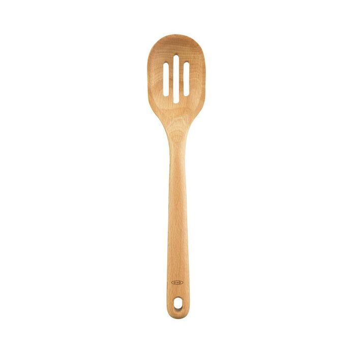

Check the source
Match the exact product, SKU, and market before collecting facts.
YOUR FRIENDLY NEIGHBORHOOD
E-commerce VA &
AI Automation Specialist.
Clear listings.
Smarter everyday workflows.
ILOILO, PHILIPPINES · GMT+8
MY MISSION
I help bring order to the everyday work behind an online store.
Product listings. Product research. Workflows that keep the next step clear.
Meet your next VA ↘01 THE ORIGIN STORY
Careful with the details.
Curious about what's next.
I'm Joseph, an E-commerce VA & AI Automation Specialist building my practice around product listings, research, and practical workflows. My data-encoding background is the starting point: organized information, clear records, and work that's ready for review.
I'm developing my automation skills through independent projects, starting with intake checks, request routing, and review-ready handoffs. My interactive demo shows the workflow logic; live AI and app integrations are the next step. I'm looking for a small, clearly defined task where I can follow your process and contribute with care.
Coca-Cola Europacific Aboitiz Philippines
February 2023 — November 202502 THE UTILITY BELT
Start with a focused task and a clear deliverable. Explore my project files, then let’s agree on your process and scope.
Draft titles, descriptions, SKUs, variants, prices, and a list of missing product details.
See the catalog sample ↗02 / RESEARCHCompare public product information, check source facts, and explain which keywords fit.
Open the research sample ↗03 / PRODUCT COPYTurn supplied specifications into readable descriptions and benefit-focused bullet drafts.
Try the before & after ↗04 / STORE SUPPORTOrganize product records, flag duplicate SKUs, and prepare clear review notes.
Follow the decision log ↗05 / COMMUNICATIONDraft helpful replies to order and product questions using your approved policies.
Read the reply samples ↗06 / AI AUTOMATIONMap repetitive tasks, define routing rules, and prototype a clear path from request to human review.
Run the workflow demo ↗NEXT LEVEL, IN PROGRESS
These tools are my learning roadmap, not platforms I claim to have managed for clients.
Practice goal: prepare draft listings, understand variants, and review order records.
Practice goal: clean product information, organize inquiries, and prepare consistent product layouts.
Practice goal: draft from approved source facts, handle missing information, and check outputs before use. A connected AI step is planned for the workflow prototype.
Practice goal: connect intake to a review sheet, check required fields, and prevent duplicates. Run the workflow prototype ↗
IN FOCUS PRODUCT LISTING PROJECT
OXO Wooden Corner Spoon · A researched listing proposal using manufacturer specifications. Reviewed October 11, 2026.
Beechwood · 12.5-inch length · Hand-wash care
PRODUCT PHOTO & SPECIFICATIONS: OXO ↗Keep the product’s specific shape and care instructions visible. Do not add a heat rating or unsupported certification.
Reach into cookware corners with a wooden spoon shaped for the job. This one-piece beechwood utensil has a natural-oil finish and is suitable for non-stick cookware. Wash by hand after use.
The editorial choice: explain the shape first, then construction and care. Keep promotional filler out.
Read the full copy handoff ↗Independent editorial proposal. OXO is not a client or sponsor.
The individual OXO Slotted Spoon page lists a 12-inch length. The Wooden Utensil Set page lists a 14-inch slotted spoon component. Those records should stay separate until the component identity is confirmed.
See both source records and the decision ↗Match the exact product, SKU, and market before collecting facts.
Write clear copy and keep sourced fields separate from proposed changes.
Include the file, source links, and the questions that still need an answer.
03 THE MISSION FILES
Real product research and a working browser workflow, developed as independent projects. Open the source files, follow the decisions, and review the handoff.
Showing all 3 projects.

PRODUCT DATA / MANUFACTURER RESEARCH
Source-linked catalog records for real products, with a dimension discrepancy and a clear review decision.
Open the case study ↗Download catalog CSV ↓WORKFLOW AUTOMATION / WORKING PROTOTYPE
Try shipping, refund, missing-data, and duplicate scenarios. Inspect the routing decisions and download the review queue.
Try the live demo ↗Verified product details
A focused copy draft
A review-ready handoff
PRODUCT LISTING / INDEPENDENT RESEARCH
A product title and description with editorial decisions, manufacturer facts, and a downloadable copy handoff.
Inspect the research ↗BONUS A QUICK SIDE QUEST
Take a 30-second break. Catch the falling task cards before they escape your web. A little focus goes a long way.
LET’S TEAM UP SUPPORT, ON YOUR TERMS.
Your next listing. Your growing to-do list.
Choose the support that fits your workload.
Product listings · Product research
Copy drafts · Store support
Ongoing plans shown per week. The starter is a one-time paid trial.
A small task. A useful first step.
Start with one clearly defined task.
Paid trial · No ongoing commitment
Keep the everyday work moving.
Regular support for an agreed task list.
Schedule and priorities agreed together
More room for your daily workload.
A consistent schedule for ongoing tasks.
Start date subject to availability
Planning an AI automation project? Choose a one-time project for a scope-based quote. Connected apps, AI usage, and ongoing maintenance are discussed separately from the VA hour packages.
Get your First-Task Roadmap: a concise handoff that helps you decide what deserves attention next.
A smaller hour block or a clearly scoped project works, too.
All rates in USD. Hours cover agreed tasks, with scope and schedule confirmed before booking. Additional work is quoted separately. Platform access and onboarding are agreed where needed.
We agree on a task that fits a three-hour budget—for example, a small listing review or product-data cleanup. The number of products depends on the information and complexity. I’ll confirm the scope before starting and reserve time for your First-Task Roadmap.
Yes. We can discuss a larger hour block or ongoing support after the first task, subject to availability.
No. It simply multiplies the weekly rate by four. Calendar months vary in length. Billing terms and any ongoing arrangement are agreed separately.
04 THE NEXT CHAPTER
Got a task?
Let's untangle it.
A listing batch, a product research brief, or a repetitive process that needs a clearer workflow. Tell me the scope and your preferred timeline.
josephberin12356@gmail.com ↗